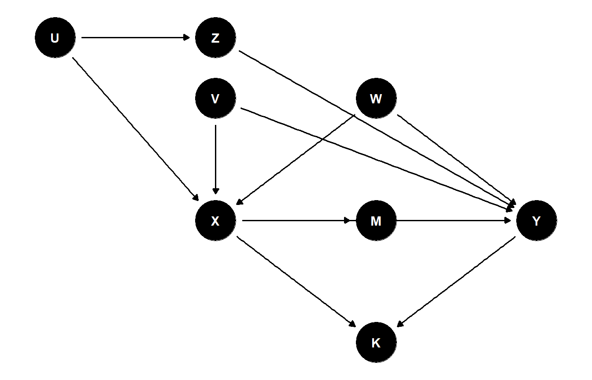
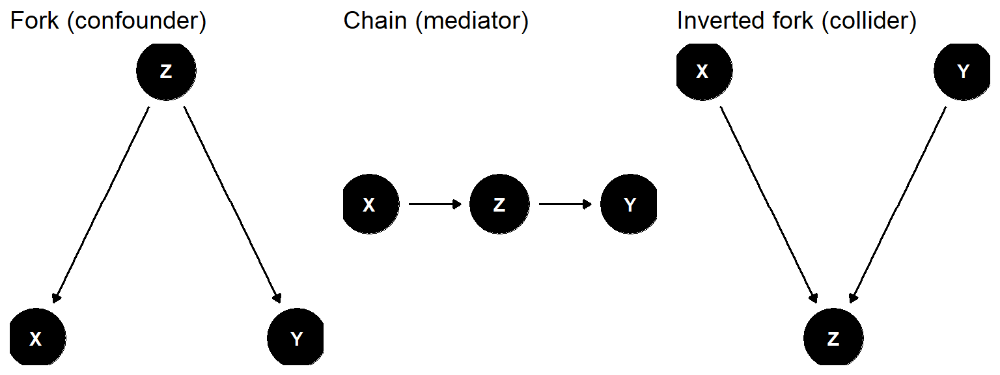
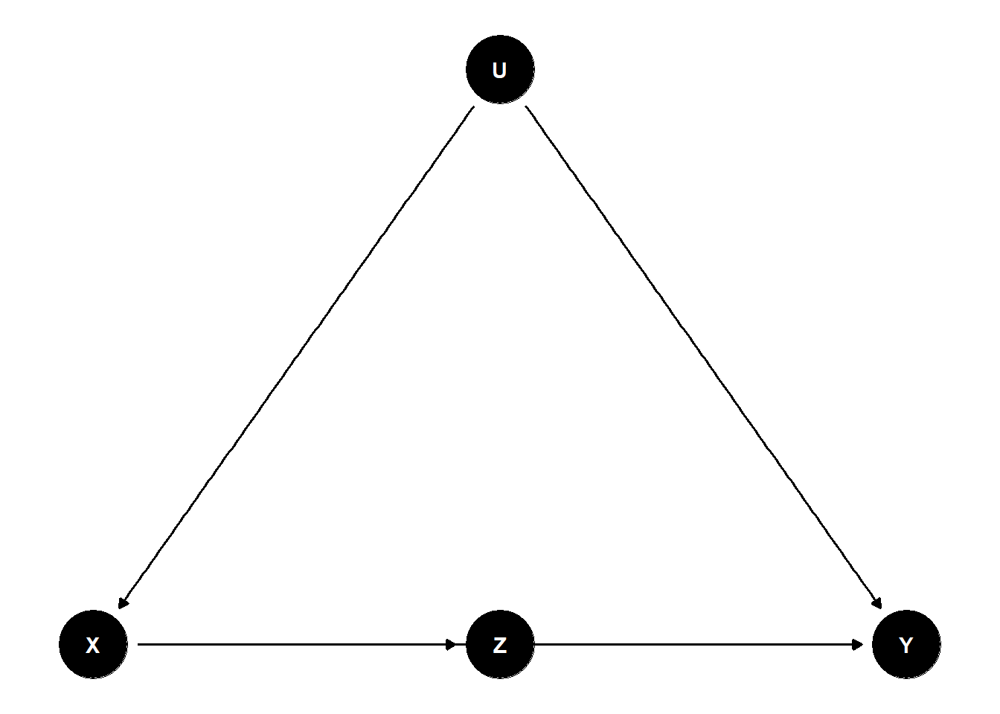
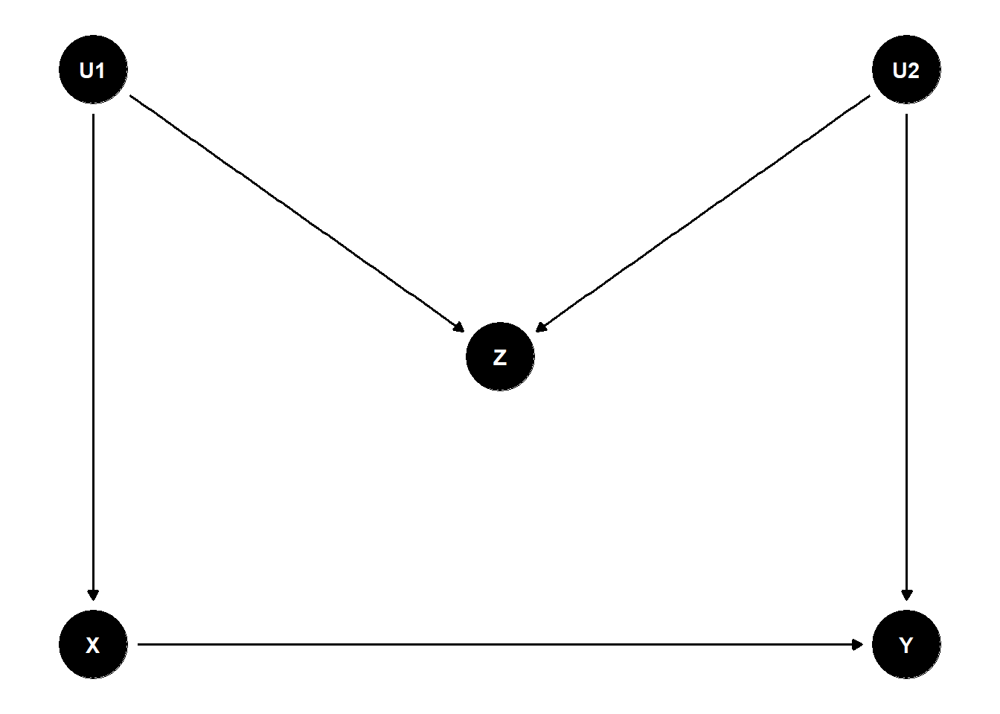
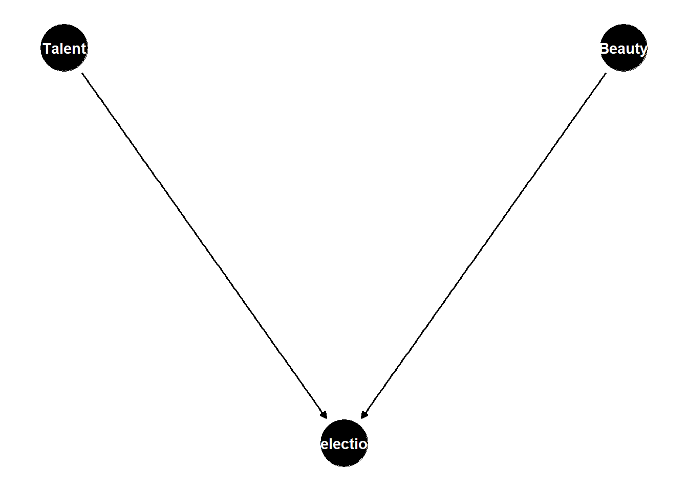
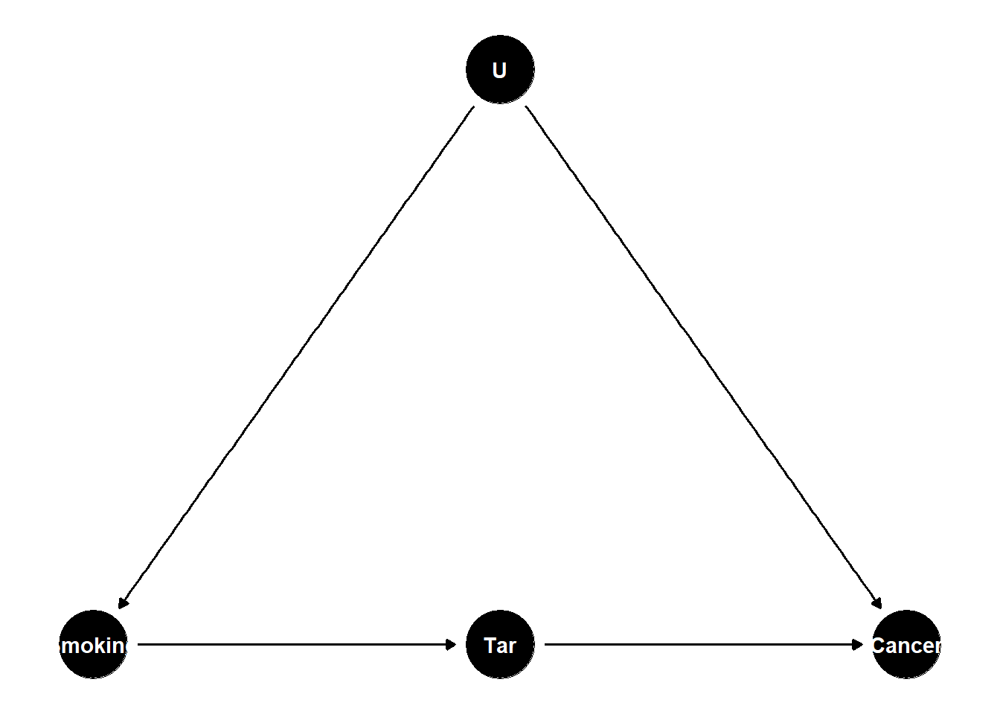
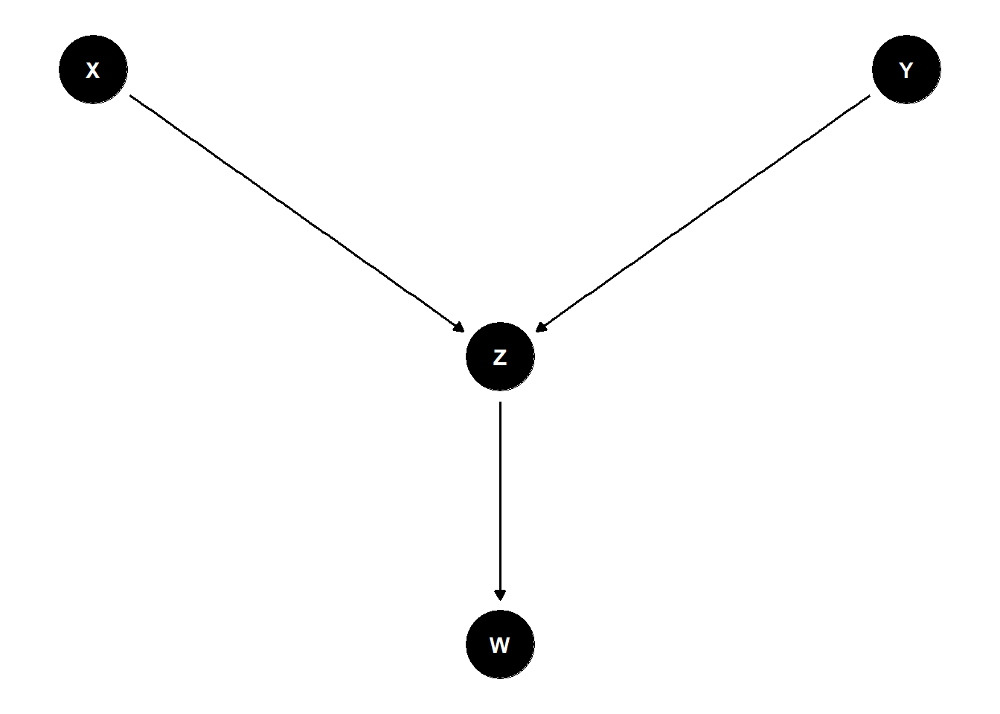

Chapter 50 Directed Acyclic Graphs
Abstract. A directed acyclic graph turns assumptions about a data generating process into an object that can be reasoned about formally. This chapter develops the graphical vocabulary needed to decide what to adjust for and what to leave alone. It introduces chains, forks, and colliders as the three elementary structures, defines d-separation, and derives the back-door and front-door criteria that license identification from observational data. A worked example compares competing adjustment sets for one graph and shows that valid sets are not interchangeable once finite-sample precision is considered. The chapter then works through the cases where graphical intuition most often fails: M-bias, where adjusting for a pre-treatment variable opens a path rather than closing one, then Berkson’s paradox and selection on a collider, and finally conditioning on a collider’s descendant. A front-door application to smoking, tar, and cancer illustrates identification without exposure ignorability. Causal discovery, structure learning, and a workflow for moving from a drawn graph to an estimation strategy close the chapter.
Keywords: Directed acyclic graphs; D-separation; Back-door criterion; Front-door criterion; Collider bias; Causal discovery
Directed acyclic graphs (DAGs) provide a formal and visual framework for representing assumptions about causal structures. In modern data analysis, they are essential tools for understanding, identifying, and validating causal effects (Pearl and Mackenzie 2018; Pearl 2014).
A DAG is a graph composed of nodes (representing variables) and directed edges (arrows) showing the direction of causality. Acyclic means that the graph contains no feedback loops, so one cannot return to the same node by following the direction of the arrows. The arrows encode structural assumptions: an arrow from \(X\) to \(Y\) states that, holding all other parents of \(Y\) fixed, intervening on \(X\) can change \(Y\).
DAGs sit at the center of the design choices made elsewhere in the book. The selection-on-observables strategies (Section 44.10) presume that a finite set of measured covariates closes every back-door path, while the selection-on-unobservables tools (Section 44.11) acknowledge that no such set exists and seek leverage from instruments, panels, or natural experiments. The conditional-ignorability assumption (Section 35.5.2) and the overlap requirement (Section 35.5.3) both have transparent graphical readings on a DAG, as do violations of SUTVA when interference adds new edges between units. The chapter therefore complements the quasi-experimental toolkit by giving analysts a language for stating which design assumptions are credible before any estimator is chosen.
Understanding DAGs helps analysts reason about:
- Which variables to control for in a regression model.
- How to avoid collider bias and confounding.
- What types of data are needed to estimate causal effects.
- Where causal identification fails due to unobserved variables.
These R packages facilitate DAG creation, visualization, and causal analysis:
dagitty: Powerful syntax for defining DAGs, checking d-separation, and performing adjustment-set analysis.ggdag: Aggplot2-based visualization tool for DAGs, compatible withdagitty, providing publication-ready DAGs.dagR: Focuses on applied epidemiological use of DAGs, particularly for teaching.r-causal: Developed by the Center for Causal Discovery. Offers methods for causal discovery from data (also in Python).
Web tools:
- Publication-ready DAG editor: shinyDAG, an R-based Shiny app for creating DAGs interactively.
- Standalone DAG tool: DAG program by Sven Knüppel, suited to beginners needing an intuitive graphical interface.
50.1 Basic notation and graph structures
Directed acyclic graphs are composed of three elementary building blocks: chains, forks, and inverted forks. Every path in any DAG decomposes into a sequence of these primitives, so the rules below generalize to graphs of arbitrary size.
50.1.1 Mediators (chains)
\[ X \to Z \to Y \]
- Variable \(Z\) mediates the effect of \(X\) on \(Y\).
- Conditioning on \(Z\) blocks the indirect effect of \(X\) on \(Y\) that flows through \(Z\).
- Marketing example: an email promotion (\(X\)) raises customer interest (\(Z\)), which raises purchase probability (\(Y\)). Controlling for interest removes the indirect path and isolates any remaining direct impact of the email.
50.1.2 Common causes (forks)
\[ X \leftarrow Z \to Y \]
- \(Z\) is a confounder and induces a non-causal association between \(X\) and \(Y\).
- To estimate the causal effect of \(X\) on \(Y\), the path through \(Z\) must be blocked, typically by conditioning on \(Z\).
- Finance example: a macroeconomic indicator (\(Z\)) shifts both investment decisions (\(X\)) and market returns (\(Y\)).
If \(Z\) is left uncontrolled, \(X\) and \(Y\) will appear correlated through their shared cause rather than through any causal link.
50.1.3 Common effects (colliders)
\[ X \to Z \leftarrow Y \]
- \(Z\) is a collider on the path \(X \to Z \leftarrow Y\). The path is blocked by default.
- Conditioning on \(Z\), or on any descendant of \(Z\), opens the path and induces a spurious association between \(X\) and \(Y\).
- HR analytics example: education (\(X\)) and experience (\(Y\)) are independent in the applicant pool but both raise the probability of being hired (\(Z\)). Among hires only, education and experience become negatively associated even though no causal link exists.
50.1.4 Other key concepts
- Descendants. A descendant of a node \(V\) is any variable reachable by following arrows out of \(V\). Conditioning on a descendant of a collider is almost as bad as conditioning on the collider itself: it partially opens the same non-causal path, because the descendant carries information about the collider. Conditioning on a descendant of a confounder, by contrast, can serve as a proxy adjustment, though usually with residual bias.
- d-separation. A graphical criterion for conditional independence. A path is blocked by a conditioning set \(\mathbf{S}\) when (i) it contains a chain or fork whose middle node is in \(\mathbf{S}\), or (ii) it contains a collider such that neither the collider nor any of its descendants is in \(\mathbf{S}\). Two nodes \(X\) and \(Y\) are d-separated given \(\mathbf{S}\) when every path between them is blocked, which implies \(X \perp\!\!\!\perp Y \mid \mathbf{S}\) in any distribution compatible with the graph.
50.2 Identification: back-door and front-door criteria
Knowing how chains, forks, and colliders behave is half the battle. The other half is turning that knowledge into a recipe that picks out the right set of variables to condition on. Pearl’s two classical criteria do exactly that. The back-door criterion handles the common case in which all confounders are observable. The front-door criterion rescues identification when they are not, provided a fully mediated pathway is observed instead.
To validly estimate the causal effect of \(X\) on \(Y\) in a DAG, we need a set \(\mathbf{S}\) of measured variables that satisfies one of two classical identification criteria.
50.2.1 The back-door criterion
A set \(\mathbf{S}\) satisfies the back-door criterion relative to \((X, Y)\) when:
- no node in \(\mathbf{S}\) is a descendant of \(X\), and
- \(\mathbf{S}\) blocks every path between \(X\) and \(Y\) that begins with an arrow into \(X\) (“back-door paths”).
When such an \(\mathbf{S}\) exists, \[ P(Y \mid \operatorname{do}(X = x)) = \sum_{s} P(Y \mid X = x, \mathbf{S} = s)\, P(\mathbf{S} = s), \] the familiar covariate-adjustment formula. The back-door criterion is the workhorse behind regression adjustment, propensity-score methods, and the matching methods developed for observational data. It is also the graphical counterpart of the omitted-variable bias intuition: an unblocked back-door path is exactly what a missing regressor produces in linear models (Pearl and Mackenzie 2018).
50.2.2 The front-door criterion
When every back-door adjustment set contains an unmeasured variable, back-door adjustment fails. This is the graphical face of endogeneity: the regression of \(Y\) on \(X\) with the available controls is no longer interpretable as a structural effect. The front-door criterion offers a second route to identification through a fully mediated pathway. Suppose all of the effect of \(X\) on \(Y\) flows through an observed mediator \(M\), and there is no unblocked back-door path from \(X\) to \(M\) or from \(M\) to \(Y\) (other than through \(X\)). Then \[ P(Y \mid \operatorname{do}(X)) = \sum_m P(M = m \mid X) \sum_{x'} P(Y \mid M = m, X = x')\, P(X = x'), \] which is identifiable from observed data even when \(X\) and \(Y\) share an unmeasured confounder. The canonical illustration is given in Section 50.8 below. When neither criterion applies, analysts often turn to the instrumental-variables machinery, which exploits an exogenous source of variation in \(X\) rather than attempting to block the back-door path.
50.3 Choosing among competing adjustment sets: a worked example
The back-door criterion typically admits more than one valid adjustment set, and dagitty::adjustmentSets() returns the minimal ones, that is, the sets from which no variable can be removed without reopening a back-door path. The following worked example shows how the function picks among competing minimal sets in a DAG with several back-door paths, a mediator, and a collider, and how the analyst chooses between the candidates that the function reports.
Consider the DAG in Figure 50.1. The exposure \(X\) has several common causes with the outcome \(Y\): \(V\) and \(W\) each enter \(X\) and \(Y\) directly, while \(U\) enters \(X\) and reaches \(Y\) only through an intermediate variable \(Z\). In addition, \(X\) acts on \(Y\) both directly and through a mediator \(M\), and the variable \(K\) is a common effect (collider) of \(X\) and \(Y\), perhaps a downstream record-keeping flag generated after both treatment and outcome are realised.
multipath <- dagitty("dag {
U -> X
U -> Z
Z -> Y
V -> X
V -> Y
W -> X
W -> Y
X -> M
M -> Y
X -> Y
X -> K
Y -> K
}")
coordinates(multipath) <- list(
x = c(U = 0, Z = 1, V = 1, W = 2, X = 1, M = 2, Y = 3, K = 2),
y = c(U = 3, Z = 3, V = 2.4, W = 2.4, X = 1.2, M = 1.2, Y = 1.2, K = 0)
)
ggdag(multipath) + theme_dag()
Figure 50.1: A DAG with several back-door paths from X to Y, a mediator M, and a downstream collider K. The variables U, V, W, and Z together generate three distinct back-door paths and several competing minimal adjustment sets.
The three back-door paths are:
- \(X \leftarrow U \to Z \to Y\), which a chain through \(Z\) closes either by conditioning on \(U\) or on \(Z\).
- \(X \leftarrow V \to Y\), blocked only by conditioning on \(V\).
- \(X \leftarrow W \to Y\), blocked only by conditioning on \(W\).
The forward paths \(X \to Y\) and \(X \to M \to Y\) carry the causal effect we want to estimate, and the path \(X \to K \leftarrow Y\) is blocked by default because \(K\) is a collider. We now ask dagitty for the minimal back-door adjustment sets and, separately, for all admissible sets:
adjustmentSets(multipath, exposure = "X", outcome = "Y")
#> { V, W, Z }
#> { U, V, W }
adjustmentSets(multipath, exposure = "X", outcome = "Y", type = "all")
#> { U, V, W }
#> { V, W, Z }
#> { U, V, W, Z }The first call returns the two minimal back-door sets, \(\{V, W, U\}\) and \(\{V, W, Z\}\). Both close all three back-door paths: each contains \(V\) and \(W\) to handle paths (2) and (3), and each picks one of the two valid blockers, \(U\) or \(Z\), for path (1). The second call enumerates every admissible super-set, including \(\{V, W, U, Z\}\), which is valid but not minimal because dropping either \(U\) or \(Z\) would still leave path (1) blocked.
Several non-listed sets would be incorrect, and it is instructive to see why:
- Conditioning on the collider \(K\) would open the path \(X \to K \leftarrow Y\), inducing a spurious association between \(X\) and \(Y\) that no other adjustment can repair. This is why \(K\) never appears in any set returned by
adjustmentSets(). - Conditioning on the mediator \(M\) would block the indirect path \(X \to M \to Y\) and so identify a controlled direct effect rather than the total effect \(X \to Y\). The function does not return \(M\) for the default
effect = "total". Requestingeffect = "direct"would change the answer. - Dropping \(V\) or \(W\) from either minimal set leaves a back-door path unblocked. For instance, \(\{U, W\}\) omits \(V\) and so leaves \(X \leftarrow V \to Y\) open.
isAdjustmentSet(multipath, c("U", "W"), exposure = "X", outcome = "Y")returnsFALSE.
Because both \(\{V, W, U\}\) and \(\{V, W, Z\}\) identify the same total effect under the assumed DAG, the choice between them is not a question of identification but of statistical and measurement practice. Three considerations typically settle it.
- Measurement quality. If \(U\) is a noisy proxy for an underlying latent trait while \(Z\) is recorded cleanly, conditioning on \(Z\) will block path (1) more reliably, and the reverse holds when \(Z\) is the noisier variable. The measurement-error discussion explains why a noisy adjustment variable leaves a residual open path proportional to the noise variance.
- Sample-size and overlap considerations. The set whose joint distribution overlaps better between treated and control units yields more stable propensity scores and better finite-sample behavior for matching methods. When \(U\) is high-dimensional or sparsely supported, the lower-dimensional set \(\{V, W, Z\}\) may be preferable on overlap grounds even if both are theoretically valid.
- Robustness to DAG misspecification. If the analyst suspects an additional unobserved arrow into \(Z\) that the drawn DAG omits, conditioning on \(Z\) would itself open a new back-door path and bias the estimate, while conditioning on \(U\) would not. Reporting estimates under both minimal sets is a cheap and informative sensitivity check, and large discrepancies are a warning that the DAG is wrong.
The same logic generalizes: when adjustmentSets() returns several minimal candidates, the function has done its identification job, and the analyst’s remaining decision is an empirical trade-off about which observed surrogate is best measured, best supported, and least vulnerable to plausible departures from the assumed graph.
50.4 Confounders, mediators, and colliders side by side
The three primitive structures look superficially similar but call for opposite analytic decisions: condition on a confounder, leave a collider alone, and condition on a mediator only when total effects are not the target. Figure 50.2 places them next to one another.
fork <- dagitty("dag { X <- Z -> Y }")
coordinates(fork) <- list(x = c(X = 1, Z = 2, Y = 3), y = c(X = 1, Z = 2, Y = 1))
chain <- dagitty("dag { X -> Z -> Y }")
coordinates(chain) <- list(x = c(X = 1, Z = 2, Y = 3), y = c(X = 1, Z = 1, Y = 1))
collider <- dagitty("dag { X -> Z; Y -> Z }")
coordinates(collider) <- list(x = c(X = 1, Z = 2, Y = 3), y = c(X = 1, Z = 0, Y = 1))
p1 <- ggdag(fork) + theme_dag() + ggtitle("Fork (confounder)")
p2 <- ggdag(chain) + theme_dag() + ggtitle("Chain (mediator)")
p3 <- ggdag(collider) + theme_dag() + ggtitle("Inverted fork (collider)")
# Combine into a single figure so the chunk label resolves to one image
# rather than three separate sub-figures.
gridExtra::grid.arrange(p1, p2, p3, ncol = 3)
Figure 50.2: Three elementary DAG structures: a confounder (fork), a mediator (chain), and a collider (inverted fork).
The decision rule is summarized in Table 50.1.
| Role | Structure | Default state | Effect of conditioning on Z |
|---|---|---|---|
| Confounder | X <- Z -> Y | Path open | Closes the back-door path; removes confounding bias. |
| Mediator | X -> Z -> Y | Path open | Blocks indirect effect; isolates direct effect only. |
| Collider | X -> Z <- Y | Path blocked | Opens the path; induces spurious X–Y association. |
Reading Table 50.1 row by row clarifies why a single covariate cannot be classified in isolation: the same variable can be a confounder in one DAG, a mediator in another, and a collider in a third, depending on the surrounding edges. The graphical perspective also underwrites the mediation analysis framework, which decomposes total effects along chain paths, and the moderation analysis framework, which examines how effects vary across subgroups defined by additional covariates.
50.5 A confounded mediator example
We now build a small DAG that contains both a mediator and a true confounder. The exposure \(X\) affects \(Y\) through a mediator \(Z\), and an unobserved variable \(U\) confounds the \(X \to Y\) relationship by acting as a common cause of \(X\) and \(Y\). Figure 50.3 shows the structure.
dag <- dagitty("dag {
X -> Z -> Y
X -> Y
U -> X
U -> Y
U [unobserved]
}")
coordinates(dag) <- list(
x = c(X = 1, Z = 2, Y = 3, U = 2),
y = c(X = 1, Z = 1, Y = 1, U = 2)
)
ggdag(dag) + theme_dag()
Figure 50.3: Confounded mediator: X affects Y both directly and through the mediator Z, while U is an unobserved common cause of X and Y.
This DAG has:
- A direct causal path \(X \to Y\).
- A mediated causal path \(X \to Z \to Y\).
- A back-door path through an unobserved confounder: \(X \leftarrow U \to Y\).
Because \(U\) is unobserved, regressing \(Y\) on \(X\) and \(Z\) alone will not identify the total causal effect of \(X\) on \(Y\). dagitty confirms there is no admissible adjustment set built from observed variables:
If \(U\) were observed, the singleton \(\{U\}\) would close the back-door path and identify the total effect of \(X\) on \(Y\). Conditioning also on the mediator \(Z\) would instead identify the controlled direct effect of \(X\) on \(Y\) holding \(Z\) fixed, a different estimand whose interpretation is much more delicate (VanderWeele 2015). Inadvertently conditioning on a mediator is one of the canonical examples of overcontrol bias, and the good and bad controls checklist in Chapter 51 treats this case at length. When \(U\) is genuinely unobserved but a clean proxy is available, the proxy-variable methods become the natural fallback. When \(U\) is measured with error, the measurement-error discussion governs how much of the back-door path the noisy proxy actually closes.
50.6 M-bias: when adjusting for a pre-treatment variable hurts
A common misconception is that adjusting for any pre-treatment covariate can only reduce bias. The M-bias structure shows this is false. Consider Figure 50.4: two unobserved variables \(U_1\) and \(U_2\) each cause an observed pre-treatment variable \(Z\), and they also separately cause \(X\) and \(Y\). The graph contains no confounding of \(X\) on \(Y\). The only path from \(X\) to \(Y\) that does not go through \(X\)’s causal descendants is \(X \leftarrow U_1 \to Z \leftarrow U_2 \to Y\), which is blocked at the collider \(Z\).
mbias <- dagitty("dag {
U1 -> X
U1 -> Z
U2 -> Z
U2 -> Y
X -> Y
U1 [unobserved]
U2 [unobserved]
}")
coordinates(mbias) <- list(
x = c(U1 = 1, U2 = 3, Z = 2, X = 1, Y = 3),
y = c(U1 = 2, U2 = 2, Z = 1.5, X = 1, Y = 1)
)
ggdag(mbias) + theme_dag()
Figure 50.4: M-bias structure: Z is a pre-treatment collider on the path X <- U1 -> Z <- U2 -> Y, so conditioning on Z opens a non-causal path between X and Y.
If we leave \(Z\) alone, no adjustment is needed: the marginal regression of \(Y\) on \(X\) recovers the causal effect because the only back-door path is already blocked by the collider \(Z\). If, however, an analyst routinely “controls for everything pre-treatment” and includes \(Z\), conditioning opens the path \(X \leftarrow U_1 \to Z \leftarrow U_2 \to Y\), and the estimate of \(X \to Y\) becomes biased.
# No conditioning needed: Z is a pre-treatment collider.
adjustmentSets(mbias, exposure = "X", outcome = "Y")
#> {}
# But if we naively condition on Z, paths reopen.
isAdjustmentSet(mbias, "Z", exposure = "X", outcome = "Y")
#> [1] FALSEA short simulation makes the bias concrete:
set.seed(42)
n <- 5000
U1 <- rnorm(n); U2 <- rnorm(n)
X <- 0.8 * U1 + rnorm(n)
Z <- 0.8 * U1 + 0.8 * U2 + rnorm(n)
Y <- 1.0 * X + 0.8 * U2 + rnorm(n)
coef(lm(Y ~ X))["X"] # close to the true effect (1.0)
#> X
#> 1.016547
coef(lm(Y ~ X + Z))["X"] # biased away from 1.0 because Z is a collider
#> X
#> 0.8903033The “control for everything” heuristic fails here. M-bias is the prototypical reason that pre-treatment covariates cannot be adjusted for indiscriminately (Cinelli et al. 2022). The same warning is delivered, in a different vocabulary, by the good and bad controls discussion in Chapter 51, where M-bias appears as a textbook case of well-intentioned overcontrol bias.
50.7 Berkson’s paradox and selection on a collider
A close cousin of M-bias arises through sample selection. Whenever the data we analyze are restricted to units satisfying some condition \(S\), and \(S\) is a descendant of a collider, the analysis effectively conditions on that collider. The result is Berkson’s paradox: variables that are independent in the population become correlated in the selected sample.
Suppose we want to study whether acting talent (\(X\)) affects beauty (\(Y\)) among Hollywood celebrities. In the general population the two are plausibly independent. Both, however, raise the probability of becoming famous (\(S\)), and our sample contains only the famous. Figure 50.5 encodes this story.
berkson <- dagitty("dag {
Talent -> Selection
Beauty -> Selection
Selection [adjusted]
}")
coordinates(berkson) <- list(
x = c(Talent = 1, Beauty = 3, Selection = 2),
y = c(Talent = 2, Beauty = 2, Selection = 1)
)
ggdag(berkson) + theme_dag()
Figure 50.5: Berkson selection: talent and beauty are independent in the population but both raise the probability of selection S, so restricting to S = 1 induces a spurious negative association.
A simulation confirms the paradox:
set.seed(7)
n <- 20000
talent <- rnorm(n)
beauty <- rnorm(n)
# Famous if combined score is high enough.
famous <- (talent + beauty + rnorm(n)) > 1.5
cor(talent, beauty) # near 0
#> [1] -0.002157
cor(talent[famous], beauty[famous]) # spuriously negative
#> [1] -0.3646489The lesson generalizes: any analysis that filters cases on an outcome-related criterion (hospital records, survey respondents who replied, customers retained for at least 90 days) is implicitly conditioning on a collider, and “obvious” associations among the survivors may be entirely artefactual. The same logic underlies the discussion of survivorship bias, which gives several finance and management examples in which the conditioning event is not even acknowledged as such by the analyst.
50.8 The front-door criterion: smoking, tar, and cancer
Suppose we wish to estimate the effect of smoking (\(X\)) on lung cancer (\(Y\)), but suspect an unobserved genetic factor (\(U\)) affects both. Direct back-door adjustment is impossible because \(U\) is unmeasured. If, however, smoking causes cancer only through tar deposition in the lungs (\(M\)), and the genetic factor does not affect tar except through smoking, the front-door criterion identifies the causal effect from \((X, M, Y)\) alone. Figure 50.6 illustrates.
frontdoor <- dagitty("dag {
Smoking -> Tar -> Cancer
U -> Smoking
U -> Cancer
U [unobserved]
}")
coordinates(frontdoor) <- list(
x = c(Smoking = 1, Tar = 2, Cancer = 3, U = 2),
y = c(Smoking = 1, Tar = 1, Cancer = 1, U = 2)
)
ggdag(frontdoor) + theme_dag()
Figure 50.6: Front-door identification: smoking affects lung cancer only via tar, and the unobserved genotype U confounds smoking and cancer but does not affect tar directly.
dagitty knows the front-door logic: it returns no back-door adjustment set built from observed variables, but recognizes the front-door identification when asked.
adjustmentSets(frontdoor, exposure = "Smoking", outcome = "Cancer", type = "all")
#> { U }
adjustmentSets(frontdoor, exposure = "Smoking", outcome = "Cancer",
effect = "direct")The mediator \(M\) (tar) plays a dual role: it is part of the causal pathway, and it is itself unconfounded with the outcome conditional on \(X\). The front-door criterion is the historically important demonstration that causal effects can be identified from observational data even in the presence of unmeasured confounders, provided the mediation structure is credible (Pearl and Mackenzie 2018). When such a mediator is unavailable, the design-based alternatives in the instrumental-variables chapter, the regression-discontinuity chapter, the difference-in-differences chapter, the event-study chapter, and the synthetic-control chapter offer complementary routes to identification, each underwritten by its own DAG-readable assumptions.
50.9 Conditioning on a descendant of a collider
A subtle but practically common error is to condition not on a collider itself but on one of its descendants. This still partially opens the non-causal path, because the descendant carries probabilistic information about the collider. Figure 50.7 shows the canonical case: \(X \to Z \leftarrow Y\), with \(Z\) generating an observable downstream variable \(W\) (for instance, a survey response or an automated flag).
descendant <- dagitty("dag {
X -> Z
Y -> Z
Z -> W
W [adjusted]
}")
coordinates(descendant) <- list(
x = c(X = 1, Y = 3, Z = 2, W = 2),
y = c(X = 2, Y = 2, Z = 1, W = 0)
)
ggdag(descendant) + theme_dag()
Figure 50.7: Conditioning on W, a descendant of the collider Z, reopens the non-causal path X -> Z <- Y and biases the estimated X–Y association.
A short simulation shows that the bias from adjusting for \(W\) is qualitatively the same as from adjusting for \(Z\), only attenuated by the strength of the \(Z \to W\) link.
set.seed(1)
n <- 5000
X <- rnorm(n); Y <- rnorm(n) # truly independent
Z <- X + Y + rnorm(n)
W <- Z + rnorm(n) # noisy descendant of Z
cor(X, Y) # ~ 0
#> [1] -0.001628649
coef(lm(Y ~ X + Z))["X"] # spurious negative
#> X
#> -0.5210101
coef(lm(Y ~ X + W))["X"] # also spurious, smaller magnitude
#> X
#> -0.3404655The takeaway is that the d-separation rule for colliders extends to all descendants: a collider blocks a path only when it and all of its descendants are absent from the conditioning set. With this rule in hand, we are ready to translate the chain-fork-collider-descendant taxonomy into a practical decision rule for which covariates to include in a regression specification.
50.10 Good and bad controls: a checklist
Cinelli, Forney, and Pearl’s “crash course in good and bad controls” works through eighteen canonical DAG configurations and groups them into a small number of decision rules about which variables to adjust for (Cinelli et al. 2022). The headline rules, restated graphically, are:
- Good controls. Variables on a back-door path, whether or not they are direct causes of \(X\), block confounding when conditioned on. Proxies for unobserved confounders generally help, though residual bias remains.
- Neutral controls. Variables that are causes of \(Y\) but not of \(X\), and not on any back-door path, do not bias the effect estimate but can improve precision.
- Bad controls. Mediators (when total effects are the target), colliders, descendants of colliders, and “M-bias” pre-treatment colliders should not be adjusted for. Adjusting for an instrument of \(X\) amplifies bias from any remaining unobserved confounders.
The practical workflow is therefore: draw the DAG first, then ask dagitty::adjustmentSets(), not the other way around. The longer version of this checklist, with worked regression-table consequences, lives in Chapter 51.
50.11 Causal discovery
Causal discovery involves algorithmically identifying causal relationships from data under structural assumptions such as faithfulness and causal sufficiency. Key algorithms include:
- PC algorithm: Constraint-based, uses conditional-independence testing.
- GES (Greedy Equivalence Search): Score-based method.
- FCI (Fast Causal Inference): Extends PC to handle latent confounders.
See (Eberhardt et al. 2024) for a comprehensive discussion of the assumptions and limitations of discovery algorithms in practice.
In applied work, causal discovery is best treated as a hypothesis-generation tool rather than a substitute for substantive theory: the algorithms recover a graph that is consistent with the conditional-independence structure of the data, but several DAGs typically share that structure, and only domain knowledge can distinguish between them.
50.11.1 Structure Learning with bnlearn
The PC, GES, and FCI algorithms above are named rather than implemented in the discussion so far. The bnlearn package (Scutari 2010) implements a full suite of structure-learning algorithms for discrete, Gaussian, and mixed (conditional Gaussian) data, split into three families: constraint-based algorithms that test conditional independence directly (PC-Stable, Grow-Shrink, IAMB and its variants), score-based algorithms that search the space of DAGs to maximize a penalized likelihood (hill-climbing, tabu search), and hybrid algorithms that use constraint-based tests to restrict the search space before a score-based search (Max-Min Hill-Climbing).
library(bnlearn)
# constraint-based: PC-stable
dag_pc <- pc.stable(learning.test)
# score-based: hill-climbing with the BIC score
dag_hc <- hc(learning.test, score = "bic")
# hybrid: Max-Min Hill-Climbing
dag_mmhc <- mmhc(learning.test)
plot(dag_hc)Score-based search requires a scoring function. The default BIC penalizes model complexity, while a Bayesian Dirichlet equivalent (BDe) score is preferred for small discrete samples where BIC’s asymptotic justification is weakest. Whichever family is used, the output is a completed partially directed acyclic graph (CPDAG), not a single DAG: edges that are compelled by the data’s independence structure are directed, and edges whose direction cannot be determined from observational data alone are left undirected, exactly the identifiability limit that motivates treating discovery as hypothesis generation rather than a final answer.
# arc strength via bootstrap resampling, a standard robustness check
boot_strength <- boot.strength(learning.test, R = 200, algorithm = "hc")
plot(boot_strength)
# whitelist/blacklist arcs from domain knowledge before learning
dag_constrained <- hc(learning.test, whitelist = data.frame(from = "A", to = "B"))Domain knowledge enters bnlearn the same way it enters dagitty, through whitelisted arcs that must appear and blacklisted arcs that must not, which is the practical bridge between the algorithmic output and the substantive DAG the analyst is prepared to defend.
50.11.2 Simulating from a Structural Causal Model with simcausal
Once a DAG and adjustment set are fixed, a natural robustness check is to simulate data from a structural causal model consistent with the DAG and confirm that the chosen estimator recovers the known, simulation-truth treatment effect. The simcausal package (Sofrygin et al. 2017) builds a structural causal model node by node, each node’s distribution specified as a function of its parents, and evaluates counterfactual (intervened) distributions directly rather than only observational ones.
library(simcausal)
D <- DAG.empty() +
node("W1", distr = "rbern", prob = plogis(-0.5)) +
node("W2", distr = "rbern", prob = plogis(-0.5 + 0.5 * W1)) +
node("A", distr = "rbern", prob = plogis(-0.5 - 0.3 * W1 - 0.3 * W2)) +
node("Y", distr = "rbern", prob = plogis(-0.1 + 1.2 * A + 0.3 * W1 + 0.3 * W2))
D_set <- set.DAG(D)
# define two interventions: treat none, treat all
D_set <- D_set +
action("A0", nodes = node("A", distr = "rbern", prob = 0)) +
action("A1", nodes = node("A", distr = "rbern", prob = 1))
# simulate under each regime and compute the true ATE by construction
obs_data <- sim(D_set, n = 5000)
true_effect <- eval.target(D_set, n = 50000, target = "A1-A0")$res
true_effectBecause the data-generating process is fully known by construction, eval.target() returns the exact treatment-specific means and average treatment effect implied by the DAG, which is the ground truth against which any adjustment-set-based estimator applied to obs_data can be checked. This closes the loop opened at the start of this chapter: a DAG is not just a device for choosing what to adjust for, it is also, when combined with simcausal, a device for verifying that the chosen estimator actually recovers the effect the DAG implies before that estimator is trusted on real data.
50.12 Practical workflow
A defensible DAG-based analysis proceeds in four steps.
- Draw the DAG from substantive knowledge, including any unobserved variables that domain experts insist on. This step is unavoidable: no statistical procedure can recover what the analyst is unwilling to commit to on paper.
- Check identification. Use
dagitty::adjustmentSets()(or the equivalent inggdag) to ask whether the target effect is identifiable from observed data, and if so, with which adjustment sets. - Check the DAG against data through testable implications, the conditional independencies the DAG predicts.
dagitty::impliedConditionalIndependencies()lists them, and rejecting them in data is evidence the DAG is misspecified. - Estimate, using a method (regression, matching, propensity scores, doubly robust estimators) that is faithful to the chosen adjustment set. The DAG only tells us what to adjust for, and estimation choices still matter for finite-sample performance.
Following these steps does not guarantee a correct answer, since assumptions can be wrong, but it makes those assumptions explicit, falsifiable, and reviewable, which is the minimum a publication-grade causal analysis should offer. Once the adjustment set is fixed, the choice of estimator typically reduces to the trade-offs already discussed in the matching methods, instrumental-variables, difference-in-differences, and synthetic-control chapters, depending on whether the credible identification strategy is selection-on-observables or one of its design-based alternatives.